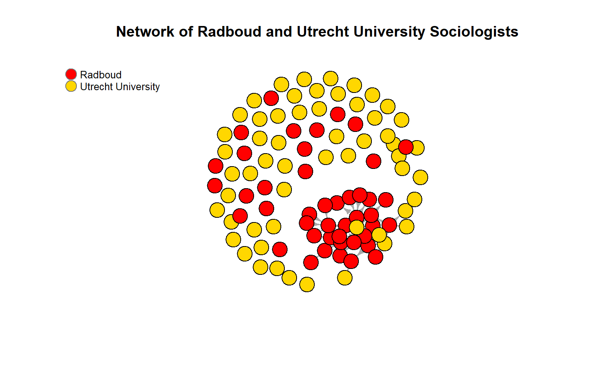
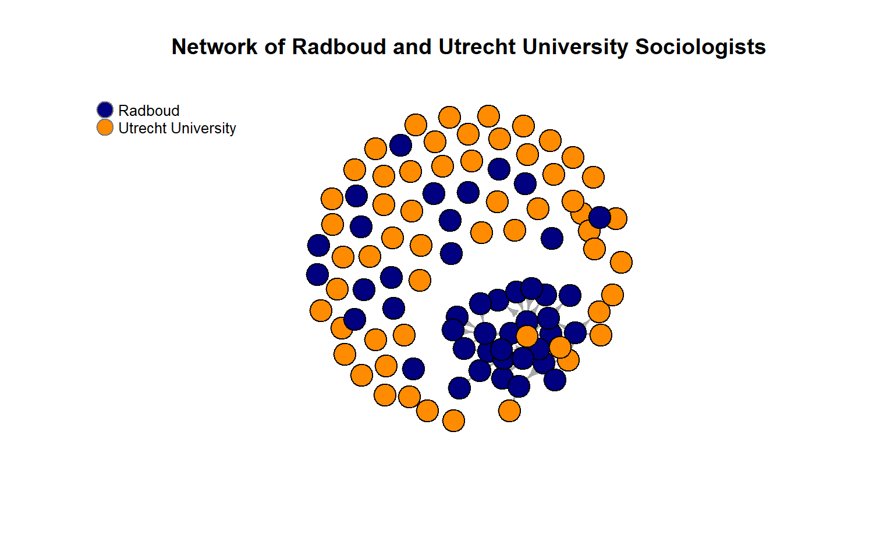
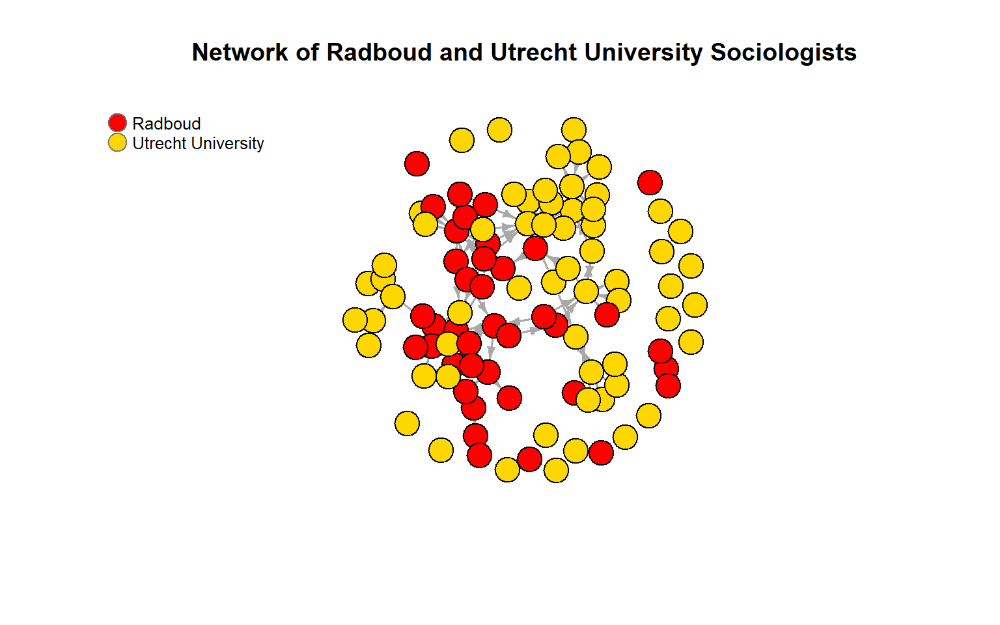
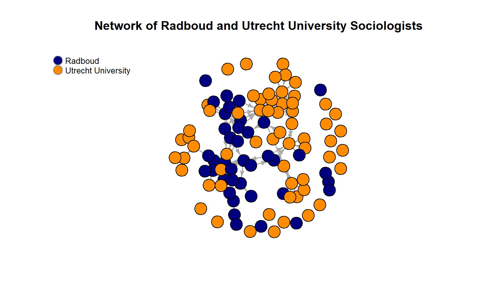
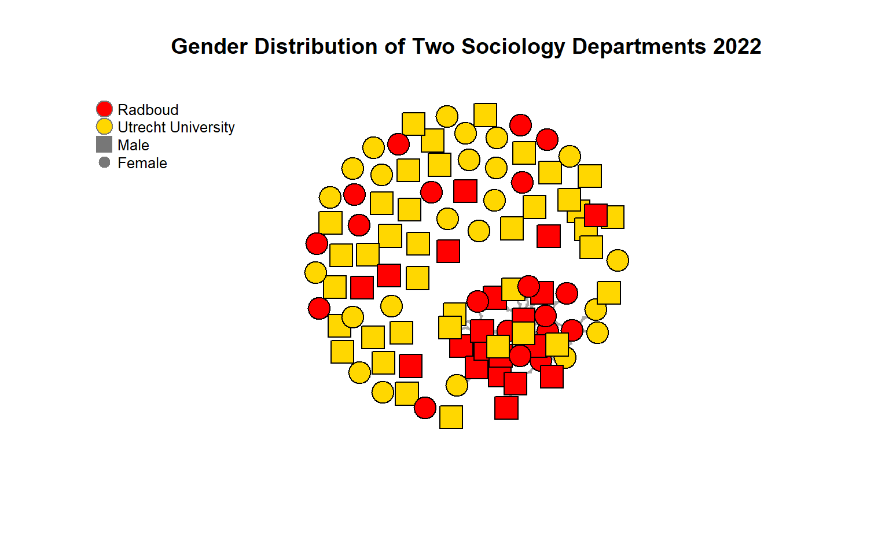
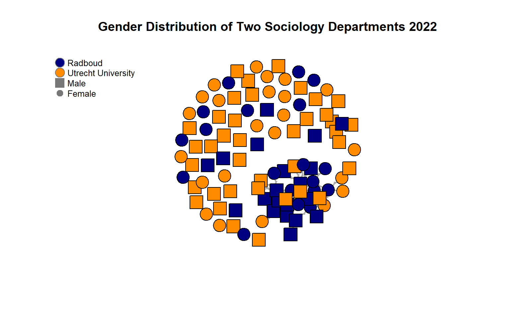
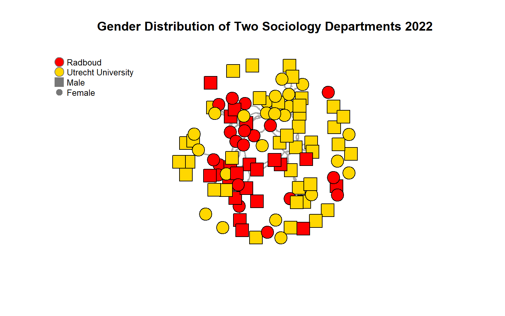
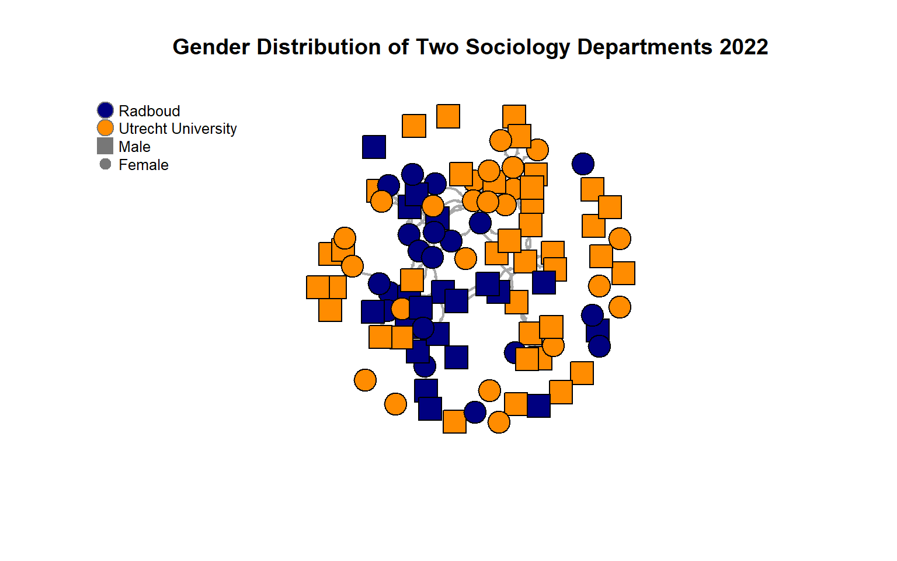

Last compiled on september, 2024
Set up
rm(list = ls())
# Libraries
library(tidyverse) # I assume you already installed this one!
library(igraph)
Load data
load("data/processed/soc_data_raw.RData")
load("data/processed/RU_UU_ego.RData")
load("data/processed/RU_UU_works.RData")
Data description
Scholars per
university
df_ego %>%
count(Universiteit1.22)
#> # A tibble: 5 × 2
#> Universiteit1.22 n
#> <chr> <int>
#> 1 "" 6
#> 2 "RU" 44
#> 3 "RUG" 1
#> 4 "UU" 48
#> 5 "UvA" 1
df_ego %>%
count(Universiteit2.22)
#> # A tibble: 4 × 2
#> Universiteit2.22 n
#> <chr> <int>
#> 1 "" 97
#> 2 "RU" 1
#> 3 "RUG" 1
#> 4 "UvA" 1
df_ego %>%
count(Universiteit1.24)
#> # A tibble: 5 × 2
#> Universiteit1.24 n
#> <chr> <int>
#> 1 "" 18
#> 2 "RU" 39
#> 3 "UU" 41
#> 4 "University of Cologne" 1
#> 5 "UvT" 1
df_ego %>%
count(Universiteit2.24)
#> # A tibble: 3 × 2
#> Universiteit2.24 n
#> <chr> <int>
#> 1 "" 98
#> 2 "RUG" 1
#> 3 "UvA" 1
Functions
df_ego %>%
group_by(Universiteit1.22) %>%
count(Functie.22)
#> # A tibble: 24 × 3
#> # Groups: Universiteit1.22 [5]
#> Universiteit1.22 Functie.22 n
#> <chr> <chr> <int>
#> 1 "" <NA> 6
#> 2 "RU" Associate researcher 1
#> 3 "RU" External Phd 4
#> 4 "RU" Guest Researcher 2
#> 5 "RU" Hoogleraar 6
#> 6 "RU" Other researcher 1
#> 7 "RU" PhD Student 15
#> 8 "RU" Postdoc 3
#> 9 "RU" Senior Researcher 1
#> 10 "RU" Universitair docent 10
#> # ℹ 14 more rows
df_ego %>%
group_by(Universiteit1.24) %>%
count(Functie.24)
#> # A tibble: 30 × 3
#> # Groups: Universiteit1.24 [5]
#> Universiteit1.24 Functie.24 n
#> <chr> <chr> <int>
#> 1 "" External Phd 2
#> 2 "" Guest Researcher 2
#> 3 "" Onderzoeker 2
#> 4 "" Other researcher 1
#> 5 "" PhD Student 8
#> 6 "" Postdoc 2
#> 7 "" Senior Researcher 1
#> 8 "RU" Associate researcher 1
#> 9 "RU" Bijzonder hoogleraar 1
#> 10 "RU" External Phd 4
#> # ℹ 20 more rows
Gender
Gender distribution
per University in 22 and 24
df_ego %>%
group_by(Universiteit1.22) %>%
summarise(mean_gender = mean(perc_female, na.rm = TRUE))
#> # A tibble: 5 × 2
#> Universiteit1.22 mean_gender
#> <chr> <dbl>
#> 1 "" 0.665
#> 2 "RU" 0.495
#> 3 "RUG" 0
#> 4 "UU" 0.417
#> 5 "UvA" 0
df_ego %>%
group_by(Universiteit1.24) %>%
summarise(mean_gender = mean(perc_female, na.rm = TRUE))
#> # A tibble: 5 × 2
#> Universiteit1.24 mean_gender
#> <chr> <dbl>
#> 1 "" 0.441
#> 2 "RU" 0.508
#> 3 "UU" 0.44
#> 4 "University of Cologne" 0
#> 5 "UvT" 0
Gender distribution
per University and per Function in 22 and 24
!!Important to change function levels to have more meaningful
results!!
df_ego %>%
group_by(Universiteit1.22, Functie.22) %>%
summarise(mean_gender = mean(perc_female, na.rm = TRUE))
#> # A tibble: 24 × 3
#> # Groups: Universiteit1.22 [5]
#> Universiteit1.22 Functie.22 mean_gender
#> <chr> <chr> <dbl>
#> 1 "" <NA> 0.665
#> 2 "RU" Associate researcher 0
#> 3 "RU" External Phd 0.498
#> 4 "RU" Guest Researcher 0
#> 5 "RU" Hoogleraar 0.17
#> 6 "RU" Other researcher 1
#> 7 "RU" PhD Student 0.65
#> 8 "RU" Postdoc 1
#> 9 "RU" Senior Researcher 0
#> 10 "RU" Universitair docent 0.5
#> # ℹ 14 more rows
df_ego %>%
group_by(Universiteit1.24, Functie.24) %>%
summarise(mean_gender = mean(perc_female, na.rm = TRUE))
#> # A tibble: 30 × 3
#> # Groups: Universiteit1.24 [5]
#> Universiteit1.24 Functie.24 mean_gender
#> <chr> <chr> <dbl>
#> 1 "" External Phd 0.5
#> 2 "" Guest Researcher 0
#> 3 "" Onderzoeker 0
#> 4 "" Other researcher 1
#> 5 "" PhD Student 0.492
#> 6 "" Postdoc 1
#> 7 "" Senior Researcher 0
#> 8 "RU" Associate researcher 0
#> 9 "RU" Bijzonder hoogleraar 0
#> 10 "RU" External Phd 0.745
#> # ℹ 20 more rows
Networks
Make the graph
object
#---- Wave 2 ----
graph_w1 <- igraph::graph_from_adjacency_matrix(
soc_data$nets[1,,], #now, I take the second wave
mode = c("directed"),
weighted = NULL,
diag = FALSE,
add.colnames = NULL
)
#---- Wave 2 ----
graph_w2 <- igraph::graph_from_adjacency_matrix(
soc_data$nets[2,,], #now, I take the second wave
mode = c("directed"),
weighted = NULL,
diag = FALSE,
add.colnames = NULL
)
Network
Visualisations (Universities)
Wave 1
University
Colours
#---- Wave 1 ----
set.seed(234544)
l_w1 <- layout_nicely(graph_w1)
plot(graph_w1, layout = l_w1,
vertex.color = ifelse(df_ego$Universiteit1.22 == "RU", "red", "gold"), #now, I can use actor attributes for plotting.
vertex.label = NA,
edge.width = 1.8,
edge.arrow.size =0.5,
main = "Network of Radboud and Utrecht University Sociologists")
legend("topleft", c("Radboud", "Utrecht University"), pch = c(21,21), col = "#777777", pt.bg = c("red", "gold"), pt.cex = 2,
cex = 0.8, bty = "n", ncol = 1)

Better
contrast
#---- Wave 1 ----
set.seed(234544)
l_w1 <- layout_nicely(graph_w1)
plot(graph_w1, layout = l_w1,
vertex.color = ifelse(df_ego$Universiteit1.22 == "RU", "navy", "darkorange"), #now, I can use actor attributes for plotting.
vertex.label = NA,
edge.width = 1.8,
edge.arrow.size =0.5,
main = "Network of Radboud and Utrecht University Sociologists")
legend("topleft", c("Radboud", "Utrecht University"), pch = c(21,21), col = "#777777", pt.bg = c("navy", "darkorange"), pt.cex = 2,
cex = 0.8, bty = "n", ncol = 1)

Wave 2
University
Colours
#---- Wave 2 ----
set.seed(234544)
l_w2 <- layout_nicely(graph_w2)
plot(graph_w2, layout = l_w2,
vertex.color = ifelse(df_ego$Universiteit1.24 == "RU", "red", "gold"), #now, I can use actor attributes for plotting.
vertex.label = NA,
edge.width = 1.8,
edge.arrow.size = 0.5,
main = "Network of Radboud and Utrecht University Sociologists")
legend("topleft", c("Radboud", "Utrecht University"), pch = c(21,21), col = "#777777", pt.bg = c("red", "gold"), pt.cex = 2,
cex = 0.8, bty = "n", ncol = 1)

Better
Contrast
#---- Wave 2 ----
set.seed(234544)
l_w2 <- layout_nicely(graph_w2)
plot(graph_w2, layout = l_w2,
vertex.color = ifelse(df_ego$Universiteit1.24 == "RU", "navy", "darkorange"), #now, I can use actor attributes for plotting.
vertex.label = NA,
edge.width = 1.8,
edge.arrow.size = 0.5,
main = "Network of Radboud and Utrecht University Sociologists")
legend("topleft", c("Radboud", "Utrecht University"), pch = c(21,21), col = "#777777", pt.bg = c("navy", "darkorange"), pt.cex = 2,
cex = 0.8, bty = "n", ncol = 1)

Network
Visualisations (Gender)
# Make a plotable gender variable to fix problems with vertex.shape
df_ego <- df_ego %>%
mutate(plot_gen = case_when(perc_female >= 0.8 ~ "Female", .default = "Male"))
# df_ego %>% count(plot_gen)
Wave 1
University
Colours
#---- Wave 1 ----
set.seed(234544)
l_w1 <- layout_nicely(graph_w1)
plot(graph_w1, layout = l_w1,
vertex.color = ifelse(df_ego$Universiteit1.24 == "RU", "red", "gold"), #now, I can use actor attributes for plotting.
vertex.shape = ifelse(df_ego$plot_gen == "Male", "square", "circle"),
vertex.label = NA,
edge.width = 2,
edge.curved = 0.5,
edge.arrow.size =0.2,
main = "Gender Distribution of Two Sociology Departments 2022")
legend("topleft", c("Radboud", "Utrecht University", "Male", "Female"), pch = c(21,21,15,20), col = "#777777", pt.bg = c("red", "gold"), pt.cex = 2,
cex = 0.8, bty = "n", ncol = 1)

Better
Contrast
#---- Wave 1 ----
set.seed(234544)
l_w1 <- layout_nicely(graph_w1)
plot(graph_w1, layout = l_w1,
vertex.color = ifelse(df_ego$Universiteit1.24 == "RU", "navy", "darkorange"), #now, I can use actor attributes for plotting.
vertex.shape = ifelse(df_ego$plot_gen == "Male", "square", "circle"),
vertex.label = NA,
edge.width = 2,
edge.curved = 0.5,
edge.arrow.size =0.2,
main = "Gender Distribution of Two Sociology Departments 2022")
legend("topleft", c("Radboud", "Utrecht University", "Male", "Female"), pch = c(21,21,15,20), col = "#777777", pt.bg = c("navy", "darkorange"), pt.cex = 2,
cex = 0.8, bty = "n", ncol = 1)

Wave 2
University
Colours
#---- Wave 2 ----
set.seed(234544)
l_w2 <- layout_nicely(graph_w2)
plot(graph_w2, layout = l_w2,
vertex.color = ifelse(df_ego$Universiteit1.24 == "RU", "red", "gold"), #now, I can use actor attributes for plotting.
vertex.shape = ifelse(df_ego$plot_gen == "Male", "square", "circle"),
vertex.label = NA,
edge.width = 2,
edge.curved = 0.5,
edge.arrow.size =0.2,
main = "Gender Distribution of Two Sociology Departments 2022")
legend("topleft", c("Radboud", "Utrecht University", "Male", "Female"), pch = c(21,21,15,20), col = "#777777", pt.bg = c("red", "gold"), pt.cex = 2,
cex = 0.8, bty = "n", ncol = 1)

Better
Contrast
#---- Wave 2 ----
set.seed(234544)
l_w2 <- layout_nicely(graph_w2)
plot(graph_w2, layout = l_w2,
vertex.color = ifelse(df_ego$Universiteit1.24 == "RU", "navy", "darkorange"), #now, I can use actor attributes for plotting.
vertex.shape = ifelse(df_ego$plot_gen == "Male", "square", "circle"),
vertex.label = NA,
edge.width = 2,
edge.curved = 0.5,
edge.arrow.size =0.2,
main = "Gender Distribution of Two Sociology Departments 2022")
legend("topleft", c("Radboud", "Utrecht University", "Male", "Female"), pch = c(21,21,15,20), col = "#777777", pt.bg = c("navy", "darkorange"), pt.cex = 2,
cex = 0.8, bty = "n", ncol = 1)

LS0tDQp0aXRsZTogIkRhdGEgcHJlcGFyYXRpb24iDQojYmlibGlvZ3JhcGh5OiByZWZlcmVuY2VzLmJpYg0KYXV0aG9yOiAiTmllbHMgVnVsbGluZ3MiDQpiaWJsaW9ncmFwaHk6IHJlZmVyZW5jZXMuYmliDQotLS0NCg0KYGBgez1odG1sfQ0KPHN0eWxlPg0KYm9keSB7DQp0ZXh0LWFsaWduOiBqdXN0aWZ5fQ0KPC9zdHlsZT4NCmBgYA0KDQpgYGB7ciwgZ2xvYmFsc2V0dGluZ3MsIGVjaG89RkFMU0UsIHdhcm5pbmc9RkFMU0UsIHJlc3VsdHM9J2hpZGUnfQ0KbGlicmFyeShrbml0cikNCg0Ka25pdHI6Om9wdHNfY2h1bmskc2V0KGVjaG8gPSBUUlVFKQ0Kb3B0c19jaHVuayRzZXQodGlkeS5vcHRzPWxpc3Qod2lkdGguY3V0b2ZmPTEwMCksdGlkeT1UUlVFLCB3YXJuaW5nID0gRkFMU0UsIG1lc3NhZ2UgPSBGQUxTRSxjb21tZW50ID0gIiM+IiwgY2FjaGU9VFJVRSwgY2xhc3Muc291cmNlPWMoInRlc3QiKSwgY2xhc3Mub3V0cHV0PWMoInRlc3QyIikpDQpvcHRpb25zKHdpZHRoID0gMTAwKQ0KcmdsOjpzZXR1cEtuaXRyKCkNCg0KDQoNCmNvbG9yaXplIDwtIGZ1bmN0aW9uKHgsIGNvbG9yKSB7c3ByaW50ZigiPHNwYW4gc3R5bGU9J2NvbG9yOiAlczsnPiVzPC9zcGFuPiIsIGNvbG9yLCB4KSB9DQoNCmBgYA0KDQpgYGB7ciBrbGlwcHksIGVjaG89RkFMU0UsIGluY2x1ZGU9VFJVRX0NCmtsaXBweTo6a2xpcHB5KHBvc2l0aW9uID0gYygndG9wJywgJ3JpZ2h0JykpDQojIGtsaXBweTo6a2xpcHB5KGNvbG9yID0gJ2RhcmtncmVlbicpDQoja2xpcHB5OjprbGlwcHkodG9vbHRpcF9tZXNzYWdlID0gJ0NsaWNrIHRvIGNvcHknLCB0b29sdGlwX3N1Y2Nlc3MgPSAnRG9uZScpDQpgYGANCg0KTGFzdCBjb21waWxlZCBvbiBgciBmb3JtYXQoU3lzLnRpbWUoKSwgJyVCLCAlWScpYA0KDQo8YnI+DQoNCi0tLS0tLS0tLS0tLS0tLS0tLS0tLS0tLS0tLS0tLS0tLS0tLS0tLS0tLS0tLS0tLS0tLS0tLS0tLS0tLS0tLS0tLS0tLS0tLQ0KDQojIFNldCB1cA0KDQpgYGB7cn0NCnJtKGxpc3QgPSBscygpKQ0KDQojIExpYnJhcmllcw0KbGlicmFyeSh0aWR5dmVyc2UpICAjIEkgYXNzdW1lIHlvdSBhbHJlYWR5IGluc3RhbGxlZCB0aGlzIG9uZSENCmxpYnJhcnkoaWdyYXBoKQ0KDQoNCmBgYA0KDQojIExvYWQgZGF0YQ0KDQpgYGB7cn0NCmxvYWQoImRhdGEvcHJvY2Vzc2VkL3NvY19kYXRhX3Jhdy5SRGF0YSIpDQoNCmxvYWQoImRhdGEvcHJvY2Vzc2VkL1JVX1VVX2Vnby5SRGF0YSIpDQoNCmxvYWQoImRhdGEvcHJvY2Vzc2VkL1JVX1VVX3dvcmtzLlJEYXRhIikNCg0KYGBgDQoNCjxicj4NCg0KLS0tLS0tLS0tLS0tLS0tLS0tLS0tLS0tLS0tLS0tLS0tLS0tLS0tLS0tLS0tLS0tLS0tLS0tLS0tLS0tLS0tLS0tLS0tLS0tDQoNCiMgRGF0YSBkZXNjcmlwdGlvbg0KDQojIyBTY2hvbGFycyBwZXIgdW5pdmVyc2l0eQ0KDQpgYGB7cn0NCg0KZGZfZWdvICU+JSBjb3VudChVbml2ZXJzaXRlaXQxLjIyKQ0KZGZfZWdvICU+JSBjb3VudChVbml2ZXJzaXRlaXQyLjIyKQ0KDQoNCmRmX2VnbyAlPiUgY291bnQoVW5pdmVyc2l0ZWl0MS4yNCkNCmRmX2VnbyAlPiUgY291bnQoVW5pdmVyc2l0ZWl0Mi4yNCkNCg0KYGBgDQoNCiMjIEZ1bmN0aW9ucw0KDQpgYGB7cn0NCmRmX2VnbyAlPiUgZ3JvdXBfYnkoVW5pdmVyc2l0ZWl0MS4yMikgJT4lIGNvdW50KEZ1bmN0aWUuMjIpDQoNCmRmX2VnbyAlPiUgZ3JvdXBfYnkoVW5pdmVyc2l0ZWl0MS4yNCkgJT4lIGNvdW50KEZ1bmN0aWUuMjQpDQpgYGANCg0KIyMgR2VuZGVyDQoNCiMjIyBHZW5kZXIgZGlzdHJpYnV0aW9uIHBlciBVbml2ZXJzaXR5IGluIDIyIGFuZCAyNA0KDQpgYGB7cn0NCg0KZGZfZWdvICU+JSBncm91cF9ieShVbml2ZXJzaXRlaXQxLjIyKSAlPiUgDQogIHN1bW1hcmlzZShtZWFuX2dlbmRlciA9IG1lYW4ocGVyY19mZW1hbGUsIG5hLnJtID0gVFJVRSkpDQoNCg0KZGZfZWdvICU+JSBncm91cF9ieShVbml2ZXJzaXRlaXQxLjI0KSAlPiUgDQogIHN1bW1hcmlzZShtZWFuX2dlbmRlciA9IG1lYW4ocGVyY19mZW1hbGUsIG5hLnJtID0gVFJVRSkpDQoNCmBgYA0KDQojIyMgR2VuZGVyIGRpc3RyaWJ1dGlvbiBwZXIgVW5pdmVyc2l0eSBhbmQgcGVyIEZ1bmN0aW9uIGluIDIyIGFuZCAyNA0KDQohIUltcG9ydGFudCB0byBjaGFuZ2UgZnVuY3Rpb24gbGV2ZWxzIHRvIGhhdmUgbW9yZSBtZWFuaW5nZnVsIHJlc3VsdHMhIQ0KDQpgYGB7cn0NCmRmX2VnbyAlPiUgZ3JvdXBfYnkoVW5pdmVyc2l0ZWl0MS4yMiwgRnVuY3RpZS4yMikgJT4lIA0KICBzdW1tYXJpc2UobWVhbl9nZW5kZXIgPSBtZWFuKHBlcmNfZmVtYWxlLCBuYS5ybSA9IFRSVUUpKQ0KDQpkZl9lZ28gJT4lIGdyb3VwX2J5KFVuaXZlcnNpdGVpdDEuMjQsIEZ1bmN0aWUuMjQpICU+JSANCiAgc3VtbWFyaXNlKG1lYW5fZ2VuZGVyID0gbWVhbihwZXJjX2ZlbWFsZSwgbmEucm0gPSBUUlVFKSkNCmBgYA0KDQojIyMgVE8gQUREISENCg0KLSAgIFByZXN0aWdpb3VzIHB1YmxpY2F0aW9ucyBwZXIgdW5pdmVyc2l0eS9nZW5kZXIvdGltZQ0KDQotICAgTW9yYW4ncyBJIGZvciBuZXR3b3JrIHNlZ3JlZ2F0aW9uIGluIHRlcm1zIG9mIGdlbmRlcg0KDQogICAgLSAgIEZvciAyMiBhbmQgMjQgdG8gc2VlIGhvdy9pZiBuZXR3b3JrcyBjaGFuZ2UNCg0KLSAgIE90aGVyIHN0YXRpc3RpY3MNCg0KICAgIC0gICBOaWNlIGRlc2NyaXB0aXZlcyB0YWJsZQ0KDQogICAgLSAgIE5ldHdvcmsgc3RhdGlzdGljcyB0YWJsZSAoZGVuc2l0eSwgYmV0d2VlbmVzcywgdHJhbnNpdGl2aXR5IGV0Yy4pDQoNCiMjIE5ldHdvcmtzDQojIyMgTWFrZSB0aGUgZ3JhcGggb2JqZWN0DQpgYGB7cn0NCg0KIy0tLS0gV2F2ZSAyIC0tLS0NCmdyYXBoX3cxIDwtIGlncmFwaDo6Z3JhcGhfZnJvbV9hZGphY2VuY3lfbWF0cml4KA0KICBzb2NfZGF0YSRuZXRzWzEsLF0sICNub3csIEkgdGFrZSB0aGUgc2Vjb25kIHdhdmUNCiAgbW9kZSA9IGMoImRpcmVjdGVkIiksDQogIHdlaWdodGVkID0gTlVMTCwNCiAgZGlhZyA9IEZBTFNFLA0KICBhZGQuY29sbmFtZXMgPSBOVUxMDQopDQoNCiMtLS0tIFdhdmUgMiAtLS0tDQpncmFwaF93MiA8LSBpZ3JhcGg6OmdyYXBoX2Zyb21fYWRqYWNlbmN5X21hdHJpeCgNCiAgc29jX2RhdGEkbmV0c1syLCxdLCAjbm93LCBJIHRha2UgdGhlIHNlY29uZCB3YXZlDQogIG1vZGUgPSBjKCJkaXJlY3RlZCIpLA0KICB3ZWlnaHRlZCA9IE5VTEwsDQogIGRpYWcgPSBGQUxTRSwNCiAgYWRkLmNvbG5hbWVzID0gTlVMTA0KKQ0KDQpgYGANCg0KIyMjIE5ldHdvcmsgVmlzdWFsaXNhdGlvbnMgKFVuaXZlcnNpdGllcykNCg0KIyMjIyBXYXZlIDEgey50YWJzZXR9DQojIyMjIyBVbml2ZXJzaXR5IENvbG91cnMNCmBgYHtyLCBmaWcud2lkdGggPSA4fQ0KDQojLS0tLSBXYXZlIDEgLS0tLQ0Kc2V0LnNlZWQoMjM0NTQ0KQ0KbF93MSA8LSBsYXlvdXRfbmljZWx5KGdyYXBoX3cxKQ0KDQpwbG90KGdyYXBoX3cxLCBsYXlvdXQgPSBsX3cxLA0KICAgICB2ZXJ0ZXguY29sb3IgPSBpZmVsc2UoZGZfZWdvJFVuaXZlcnNpdGVpdDEuMjIgPT0gIlJVIiwgInJlZCIsICJnb2xkIiksICNub3csIEkgY2FuIHVzZSBhY3RvciBhdHRyaWJ1dGVzIGZvciBwbG90dGluZy4gDQogICAgIHZlcnRleC5sYWJlbCA9IE5BLA0KICAgICBlZGdlLndpZHRoID0gMS44LA0KICAgICBlZGdlLmFycm93LnNpemUgPTAuNSwNCiAgICAgbWFpbiA9ICJOZXR3b3JrIG9mIFJhZGJvdWQgYW5kIFV0cmVjaHQgVW5pdmVyc2l0eSBTb2Npb2xvZ2lzdHMiKQ0KbGVnZW5kKCJ0b3BsZWZ0IiwgYygiUmFkYm91ZCIsICJVdHJlY2h0IFVuaXZlcnNpdHkiKSwgcGNoID0gYygyMSwyMSksIGNvbCA9ICIjNzc3Nzc3IiwgcHQuYmcgPSBjKCJyZWQiLCAiZ29sZCIpLCBwdC5jZXggPSAyLA0KICAgICAgIGNleCA9IDAuOCwgYnR5ID0gIm4iLCBuY29sID0gMSkNCg0KYGBgDQoNCiMjIyMjIEJldHRlciBjb250cmFzdA0KYGBge3IsIGZpZy53aWR0aCA9IDh9DQoNCiMtLS0tIFdhdmUgMSAtLS0tDQpzZXQuc2VlZCgyMzQ1NDQpDQpsX3cxIDwtIGxheW91dF9uaWNlbHkoZ3JhcGhfdzEpDQoNCnBsb3QoZ3JhcGhfdzEsIGxheW91dCA9IGxfdzEsDQogICAgIHZlcnRleC5jb2xvciA9IGlmZWxzZShkZl9lZ28kVW5pdmVyc2l0ZWl0MS4yMiA9PSAiUlUiLCAibmF2eSIsICJkYXJrb3JhbmdlIiksICNub3csIEkgY2FuIHVzZSBhY3RvciBhdHRyaWJ1dGVzIGZvciBwbG90dGluZy4gDQogICAgIHZlcnRleC5sYWJlbCA9IE5BLA0KICAgICBlZGdlLndpZHRoID0gMS44LA0KICAgICBlZGdlLmFycm93LnNpemUgPTAuNSwNCiAgICAgbWFpbiA9ICJOZXR3b3JrIG9mIFJhZGJvdWQgYW5kIFV0cmVjaHQgVW5pdmVyc2l0eSBTb2Npb2xvZ2lzdHMiKQ0KbGVnZW5kKCJ0b3BsZWZ0IiwgYygiUmFkYm91ZCIsICJVdHJlY2h0IFVuaXZlcnNpdHkiKSwgcGNoID0gYygyMSwyMSksIGNvbCA9ICIjNzc3Nzc3IiwgcHQuYmcgPSBjKCJuYXZ5IiwgImRhcmtvcmFuZ2UiKSwgcHQuY2V4ID0gMiwNCiAgICAgICBjZXggPSAwLjgsIGJ0eSA9ICJuIiwgbmNvbCA9IDEpDQoNCmBgYA0KDQojIyMjIFdhdmUgMiB7LnRhYnNldH0NCiMjIyMjIFVuaXZlcnNpdHkgQ29sb3Vycw0KYGBge3IsIGZpZy53aWR0aCA9IDh9DQojLS0tLSBXYXZlIDIgLS0tLQ0Kc2V0LnNlZWQoMjM0NTQ0KQ0KbF93MiA8LSBsYXlvdXRfbmljZWx5KGdyYXBoX3cyKQ0KDQpwbG90KGdyYXBoX3cyLCBsYXlvdXQgPSBsX3cyLA0KICAgICB2ZXJ0ZXguY29sb3IgPSBpZmVsc2UoZGZfZWdvJFVuaXZlcnNpdGVpdDEuMjQgPT0gIlJVIiwgInJlZCIsICJnb2xkIiksICNub3csIEkgY2FuIHVzZSBhY3RvciBhdHRyaWJ1dGVzIGZvciBwbG90dGluZy4gDQogICAgIHZlcnRleC5sYWJlbCA9IE5BLA0KICAgICBlZGdlLndpZHRoID0gMS44LA0KICAgICBlZGdlLmFycm93LnNpemUgPSAwLjUsDQogICAgIG1haW4gPSAiTmV0d29yayBvZiBSYWRib3VkIGFuZCBVdHJlY2h0IFVuaXZlcnNpdHkgU29jaW9sb2dpc3RzIikNCmxlZ2VuZCgidG9wbGVmdCIsIGMoIlJhZGJvdWQiLCAiVXRyZWNodCBVbml2ZXJzaXR5IiksIHBjaCA9IGMoMjEsMjEpLCBjb2wgPSAiIzc3Nzc3NyIsIHB0LmJnID0gYygicmVkIiwgImdvbGQiKSwgcHQuY2V4ID0gMiwNCiAgICAgICBjZXggPSAwLjgsIGJ0eSA9ICJuIiwgbmNvbCA9IDEpDQoNCmBgYA0KDQojIyMjIyBCZXR0ZXIgQ29udHJhc3QNCmBgYHtyLCBmaWcud2lkdGggPSA4fQ0KIy0tLS0gV2F2ZSAyIC0tLS0NCnNldC5zZWVkKDIzNDU0NCkNCmxfdzIgPC0gbGF5b3V0X25pY2VseShncmFwaF93MikNCg0KcGxvdChncmFwaF93MiwgbGF5b3V0ID0gbF93MiwNCiAgICAgdmVydGV4LmNvbG9yID0gaWZlbHNlKGRmX2VnbyRVbml2ZXJzaXRlaXQxLjI0ID09ICJSVSIsICJuYXZ5IiwgImRhcmtvcmFuZ2UiKSwgI25vdywgSSBjYW4gdXNlIGFjdG9yIGF0dHJpYnV0ZXMgZm9yIHBsb3R0aW5nLiANCiAgICAgdmVydGV4LmxhYmVsID0gTkEsDQogICAgIGVkZ2Uud2lkdGggPSAxLjgsDQogICAgIGVkZ2UuYXJyb3cuc2l6ZSA9IDAuNSwNCiAgICAgbWFpbiA9ICJOZXR3b3JrIG9mIFJhZGJvdWQgYW5kIFV0cmVjaHQgVW5pdmVyc2l0eSBTb2Npb2xvZ2lzdHMiKQ0KbGVnZW5kKCJ0b3BsZWZ0IiwgYygiUmFkYm91ZCIsICJVdHJlY2h0IFVuaXZlcnNpdHkiKSwgcGNoID0gYygyMSwyMSksIGNvbCA9ICIjNzc3Nzc3IiwgcHQuYmcgPSBjKCJuYXZ5IiwgImRhcmtvcmFuZ2UiKSwgcHQuY2V4ID0gMiwNCiAgICAgICBjZXggPSAwLjgsIGJ0eSA9ICJuIiwgbmNvbCA9IDEpDQoNCmBgYA0KDQojIyMgTmV0d29yayBWaXN1YWxpc2F0aW9ucyAoR2VuZGVyKQ0KYGBge3J9DQojIE1ha2UgYSBwbG90YWJsZSBnZW5kZXIgdmFyaWFibGUgdG8gZml4IHByb2JsZW1zIHdpdGggdmVydGV4LnNoYXBlDQpkZl9lZ28gPC0gZGZfZWdvICU+JSBtdXRhdGUocGxvdF9nZW4gPSBjYXNlX3doZW4ocGVyY19mZW1hbGUgPj0gMC44MCB+ICJGZW1hbGUiLA0KICAgICAgICAgICAgICAgICAgICAgICAgICAgICAgICAgICAgICAgICAgICAgICAgIC5kZWZhdWx0ID0gIk1hbGUiKSkNCiMgZGZfZWdvICU+JSBjb3VudChwbG90X2dlbikNCmBgYA0KDQojIyMjIFdhdmUgMSB7LnRhYnNldH0NCiMjIyMjIFVuaXZlcnNpdHkgQ29sb3Vycw0KYGBge3IsIGZpZy53aWR0aCA9IDh9DQoNCiMtLS0tIFdhdmUgMSAtLS0tDQpzZXQuc2VlZCgyMzQ1NDQpDQpsX3cxIDwtIGxheW91dF9uaWNlbHkoZ3JhcGhfdzEpDQoNCnBsb3QoZ3JhcGhfdzEsIGxheW91dCA9IGxfdzEsDQogICAgIHZlcnRleC5jb2xvciA9IGlmZWxzZShkZl9lZ28kVW5pdmVyc2l0ZWl0MS4yNCA9PSAiUlUiLCAicmVkIiwgImdvbGQiKSwgI25vdywgSSBjYW4gdXNlIGFjdG9yIGF0dHJpYnV0ZXMgZm9yIHBsb3R0aW5nLiANCiAgICAgdmVydGV4LnNoYXBlID0gaWZlbHNlKGRmX2VnbyRwbG90X2dlbiA9PSAiTWFsZSIsICJzcXVhcmUiLCAiY2lyY2xlIiksDQogICAgIHZlcnRleC5sYWJlbCA9IE5BLA0KICAgICBlZGdlLndpZHRoID0gMiwNCiAgICAgZWRnZS5jdXJ2ZWQgPSAwLjUsDQogICAgIGVkZ2UuYXJyb3cuc2l6ZSA9MC4yLA0KICAgICBtYWluID0gIkdlbmRlciBEaXN0cmlidXRpb24gb2YgVHdvIFNvY2lvbG9neSBEZXBhcnRtZW50cyAyMDIyIikNCmxlZ2VuZCgidG9wbGVmdCIsIGMoIlJhZGJvdWQiLCAiVXRyZWNodCBVbml2ZXJzaXR5IiwgIk1hbGUiLCAiRmVtYWxlIiksIHBjaCA9IGMoMjEsMjEsMTUsMjApLCBjb2wgPSAiIzc3Nzc3NyIsIHB0LmJnID0gYygicmVkIiwgImdvbGQiKSwgcHQuY2V4ID0gMiwNCiAgICAgICBjZXggPSAwLjgsIGJ0eSA9ICJuIiwgbmNvbCA9IDEpDQpgYGANCg0KIyMjIyMgQmV0dGVyIENvbnRyYXN0DQpgYGB7ciwgZmlnLndpZHRoID0gOH0NCg0KIy0tLS0gV2F2ZSAxIC0tLS0NCnNldC5zZWVkKDIzNDU0NCkNCmxfdzEgPC0gbGF5b3V0X25pY2VseShncmFwaF93MSkNCg0KcGxvdChncmFwaF93MSwgbGF5b3V0ID0gbF93MSwNCiAgICAgdmVydGV4LmNvbG9yID0gaWZlbHNlKGRmX2VnbyRVbml2ZXJzaXRlaXQxLjI0ID09ICJSVSIsICJuYXZ5IiwgImRhcmtvcmFuZ2UiKSwgI25vdywgSSBjYW4gdXNlIGFjdG9yIGF0dHJpYnV0ZXMgZm9yIHBsb3R0aW5nLiANCiAgICAgdmVydGV4LnNoYXBlID0gaWZlbHNlKGRmX2VnbyRwbG90X2dlbiA9PSAiTWFsZSIsICJzcXVhcmUiLCAiY2lyY2xlIiksDQogICAgIHZlcnRleC5sYWJlbCA9IE5BLA0KICAgICBlZGdlLndpZHRoID0gMiwNCiAgICAgZWRnZS5jdXJ2ZWQgPSAwLjUsDQogICAgIGVkZ2UuYXJyb3cuc2l6ZSA9MC4yLA0KICAgICBtYWluID0gIkdlbmRlciBEaXN0cmlidXRpb24gb2YgVHdvIFNvY2lvbG9neSBEZXBhcnRtZW50cyAyMDIyIikNCmxlZ2VuZCgidG9wbGVmdCIsIGMoIlJhZGJvdWQiLCAiVXRyZWNodCBVbml2ZXJzaXR5IiwgIk1hbGUiLCAiRmVtYWxlIiksIHBjaCA9IGMoMjEsMjEsMTUsMjApLCBjb2wgPSAiIzc3Nzc3NyIsIHB0LmJnID0gYygibmF2eSIsICJkYXJrb3JhbmdlIiksIHB0LmNleCA9IDIsDQogICAgICAgY2V4ID0gMC44LCBidHkgPSAibiIsIG5jb2wgPSAxKQ0KYGBgDQoNCiMjIyMgV2F2ZSAyIHsudGFic2V0fQ0KIyMjIyMgVW5pdmVyc2l0eSBDb2xvdXJzDQpgYGB7ciwgZmlnLndpZHRoID0gOH0NCiMtLS0tIFdhdmUgMiAtLS0tDQpzZXQuc2VlZCgyMzQ1NDQpDQpsX3cyIDwtIGxheW91dF9uaWNlbHkoZ3JhcGhfdzIpDQoNCnBsb3QoZ3JhcGhfdzIsIGxheW91dCA9IGxfdzIsDQogICAgIHZlcnRleC5jb2xvciA9IGlmZWxzZShkZl9lZ28kVW5pdmVyc2l0ZWl0MS4yNCA9PSAiUlUiLCAicmVkIiwgImdvbGQiKSwgI25vdywgSSBjYW4gdXNlIGFjdG9yIGF0dHJpYnV0ZXMgZm9yIHBsb3R0aW5nLiANCiAgICAgdmVydGV4LnNoYXBlID0gaWZlbHNlKGRmX2VnbyRwbG90X2dlbiA9PSAiTWFsZSIsICJzcXVhcmUiLCAiY2lyY2xlIiksDQogICAgIHZlcnRleC5sYWJlbCA9IE5BLA0KICAgICBlZGdlLndpZHRoID0gMiwNCiAgICAgZWRnZS5jdXJ2ZWQgPSAwLjUsDQogICAgIGVkZ2UuYXJyb3cuc2l6ZSA9MC4yLA0KICAgICBtYWluID0gIkdlbmRlciBEaXN0cmlidXRpb24gb2YgVHdvIFNvY2lvbG9neSBEZXBhcnRtZW50cyAyMDIyIikNCmxlZ2VuZCgidG9wbGVmdCIsIGMoIlJhZGJvdWQiLCAiVXRyZWNodCBVbml2ZXJzaXR5IiwgIk1hbGUiLCAiRmVtYWxlIiksIHBjaCA9IGMoMjEsMjEsMTUsMjApLCBjb2wgPSAiIzc3Nzc3NyIsIHB0LmJnID0gYygicmVkIiwgImdvbGQiKSwgcHQuY2V4ID0gMiwNCiAgICAgICBjZXggPSAwLjgsIGJ0eSA9ICJuIiwgbmNvbCA9IDEpDQoNCmBgYA0KDQojIyMjIyBCZXR0ZXIgQ29udHJhc3QNCmBgYHtyLCBmaWcud2lkdGggPSA4fQ0KIy0tLS0gV2F2ZSAyIC0tLS0NCnNldC5zZWVkKDIzNDU0NCkNCmxfdzIgPC0gbGF5b3V0X25pY2VseShncmFwaF93MikNCg0KcGxvdChncmFwaF93MiwgbGF5b3V0ID0gbF93MiwNCiAgICAgdmVydGV4LmNvbG9yID0gaWZlbHNlKGRmX2VnbyRVbml2ZXJzaXRlaXQxLjI0ID09ICJSVSIsICJuYXZ5IiwgImRhcmtvcmFuZ2UiKSwgI25vdywgSSBjYW4gdXNlIGFjdG9yIGF0dHJpYnV0ZXMgZm9yIHBsb3R0aW5nLiANCiAgICAgdmVydGV4LnNoYXBlID0gaWZlbHNlKGRmX2VnbyRwbG90X2dlbiA9PSAiTWFsZSIsICJzcXVhcmUiLCAiY2lyY2xlIiksDQogICAgIHZlcnRleC5sYWJlbCA9IE5BLA0KICAgICBlZGdlLndpZHRoID0gMiwNCiAgICAgZWRnZS5jdXJ2ZWQgPSAwLjUsDQogICAgIGVkZ2UuYXJyb3cuc2l6ZSA9MC4yLA0KICAgICBtYWluID0gIkdlbmRlciBEaXN0cmlidXRpb24gb2YgVHdvIFNvY2lvbG9neSBEZXBhcnRtZW50cyAyMDIyIikNCmxlZ2VuZCgidG9wbGVmdCIsIGMoIlJhZGJvdWQiLCAiVXRyZWNodCBVbml2ZXJzaXR5IiwgIk1hbGUiLCAiRmVtYWxlIiksIHBjaCA9IGMoMjEsMjEsMTUsMjApLCBjb2wgPSAiIzc3Nzc3NyIsIHB0LmJnID0gYygibmF2eSIsICJkYXJrb3JhbmdlIiksIHB0LmNleCA9IDIsDQogICAgICAgY2V4ID0gMC44LCBidHkgPSAibiIsIG5jb2wgPSAxKQ0KDQpgYGANCg0KPGJyPg0KDQotLS0tLS0tLS0tLS0tLS0tLS0tLS0tLS0tLS0tLS0tLS0tLS0tLS0tLS0tLS0tLS0tLS0tLS0tLS0tLS0tLS0tLS0tLS0tLS0tLS0tLS0tLS0tLS0tLS0tLS0tLS0tLS0tLS0tIA0KDQo=